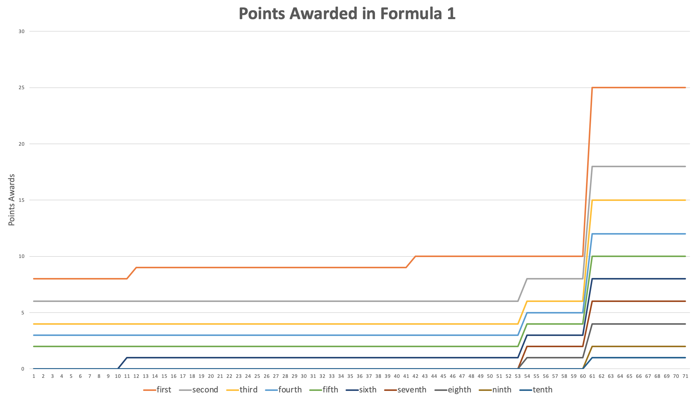

Main Website

To Do:
- Replace graph picture with d3 produced graph
- Add color to line
- Add label to show place
- Add buttons so that the graph is can be changed in scale
- Add button to switch between points over time for the sport and points scored over time for the sport